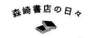

內容簡介
2009年第三屆千代田文學獎首獎
這是我最想拍成電影的一部小說！──電影導演日向朝子
2010年同名電影由菊池亞希子、內藤剛志領銜主演。
每個人都有對人生茫然失措的時候，有人選擇到世界各地旅行，
有人選擇在書本內尋找，有人在時間流逝中體悟。
每個人都想用自己的眼睛確認不同的世界，從中找到各種可能性。
目標都只有一個──想探索專屬自己的人生！
貴子從交往一年的英明口中突然被告知他將與別的女性結婚，猶如晴天霹靂般的消息，將她狠狠推入失意的深淵。加上又是辦公室戀情，她也不得不辭去工作。
愛情、事業皆落空的貴子，這時接到在神保町書店街開二手書店的悟叔來電，悟叔提出了「住在店裡幫我看店」的請求，偏偏貴子向來不知道該如何跟做事不按牌理出牌的悟叔相處，但是眼下人生毫無目標的自己，不是回老家被逼著相親，就只能去書店幫忙。在沒有其他選擇的情況下，又不想被家人看扁，便毅然決然前往神保町了。
本書以神保町書店街為舞台，用充滿幽默和細膩的筆觸描寫出現代年輕女性在人生中必經的困惑與成長。榮獲「第三屆千代田文學獎」首獎。
另外，那個莫名其妙、連知會一聲都沒有就離家出走的桃子嬸嬸突然回家了？悟叔該怎麼面對這個失而復得的老婆大人？追加收錄短篇小說〈桃子嬸嬸的歸來〉。
作者簡介
八木澤里志YAGISAWA Satoshi
一九七七年生於千葉縣，日本大學藝術學系畢業。二○○九年以《在森崎書店的日子》榮獲「第三屆千代田文學獎」首獎。該作品並被拍成電影，於二○一○年十月上映。本書收錄的〈桃子嬸嬸的歸來〉是作者得獎後的最新作品。
譯者簡介
張秋明
淡江大學日文系畢業。譯有：《京都思路》、《父親的道歉信》、《雛菊的人生》、《家守綺譚》等書。

我在森崎書店的日子是從夏天剛開始到隔年的初春時節。
那段期間我住在二樓的空房間裡，整天過著埋在書堆裡的生活。房間內採光不足，空間又很狹窄，還經常飄散著二手書的霉味，感覺很陰暗潮溼。然而直到今天，我從未忘懷在那裡度過的每一天。
那個地方開啟了我真正的人生。如果沒有那些日子，我今後的人生肯定會是枯燥乏味、單調孤寂。
一個絕對無法忘懷的重要地方──這就是森崎書店對我的意義。那些回憶至今仍鮮明地浮現在眼簾裡。
＊＊＊
整件事情的起源，只能用晴天霹靂形容。不對，對我而言，那是比青蛙從天上掉下來還要驚人的事實。
那天，交往一年的男友英明跟我說：「我要結婚了。」
一開始聽到時，我的腦海中充滿了問號。因為如果說是「我們結婚吧」，還可以理解，或是說「我想結婚」，意思也能聽得懂。可是說「我要結婚了」，就絕對有問題。所謂的結婚是基於雙方同意後所成立的誓約，因此他的遣詞用字根本完全錯誤。尤其是語氣之隨便，到底是怎麼回事？他的口吻簡直就像是在說「我在路邊撿到一百塊」似地滿不在乎。
那是六月中旬的星期五晚上，我們下了班到位於新宿的義大利餐廳享用晚餐。開在飯店頂樓的餐廳可以眺望霓虹燈閃爍的美麗夜景，是我們倆都喜歡的約會場所。
英明是同一職場、大我三年的學長，打從一進公司起他就是我心中暗戀的對象。光是和他站在一起，我的心跳就跟彈簧床沒兩樣。所以難得私下共聚的那天晚上，我們很高興地喝著紅酒，沒想到他卻冒出了這句話。
我不禁開口反問「什麼」，還以為是自己聽錯了。可是他卻氣定神閒地重複剛才的那句話，「我是說明年就要結婚了。」
「結婚？誰跟誰呢？」
「我和我的女朋友呀。」
嗄？我偏著頭不禁納悶。
「什麼女朋友？」
沒想他居然臉不紅氣不喘地說出了同公司不同部門的女生名字，一點也看不出感到內疚的樣子。對方跟我同期進公司，是個感覺很可愛的女孩子，甚至連同樣身為女人的我都想一親芳澤了。
相較之下，我不但個子高，容貌也平凡。我實在無法理解，他都已經跟那麼可愛的女生交往了，為什麼還要來招惹我的心情。
仔細一問，他們早在兩年前就開始交往。換句話說，他們的感情比我們還久。我不僅完全不知道他早有戀情，而且也從來沒有懷疑過，或是想過有那種可能性。我們的交往在公司內算是祕密，我還一廂情願地以為是怕在職場裡造成尷尬。不料對他來說，我不是真命天女，只是玩玩的對象罷了。到底是我太遲鈍了，還是他有問題？
總之，他說他們兩人都已見過對方家長，下個月就要訂婚了。我聽了頭昏眼花，腦袋瓜裡像是有和尚在敲鐘一樣。
「她堅持六月舉行婚禮，我說什麼都不聽。這麼一來的話，今年不就來不及了嗎？所以現在呢……」
我茫然地聽著他從嘴裡吐出一串話。最後只低喃了一句「是嗎，那很好呀」。連我自己也很驚訝的回應。
「oh，thank you！不過以後還是可以跟貴子約會的。」英明微微露齒一笑。就像平常一樣，自然的笑容猶如運動員般的爽朗。
如果是電視肥皂劇的話，這時候應該站起來將紅酒灑在他身上吧？可惜我從以前就不擅長在人前表現出情緒，必須事後一個人靜靜地思考，才能弄清楚自己心中到底有什麼想法。更何況當時和尚敲的鐘還響個不停。
恍恍惚惚地跟英明分開後，我一個人回到租來的房間裡。好不容易讓腦中的思緒逐漸清醒時，悲傷以迅雷不及掩耳的速度湧上心頭。沒有憤怒，完全就只有悲傷而已。這份猛烈的悲傷太具有存在感，幾乎觸手可及。
淚水不斷從眼眶泛出，而且似乎沒有停歇的跡象。我沒有開燈，一個人癱在漆黑的房間正中央哭泣。甚至還愚蠢地想著「如果這淚水是石油的話，我就是有錢人了」，同時又為自己的愚蠢哭得更凶。
真希望有人能幫幫我！我很認真地期盼。可是我無法求救出聲，只能一個人悲傷哭泣。
不料，之後情況演變得更加淒慘。
因為我們都在同一間公司，就算百般不願意還是有碰面的必要。他的態度跟往日沒有不同，卻讓我更加難受。尤其偶爾會在員工餐廳或茶水間遇到即將成為他未婚妻的女生。對方好像知道又好像不知道我們的事，見到面時總是會露出燦爛的微笑打招呼。
漸漸地我的胃開始無法承受食物，夜裡也難以成眠。體重明顯下滑，沒有靠上妝掩飾的鐵青臉色就跟死人一樣。上班時間常會突然悲從中來，只好一次又一次的躲進廁所裡咬著牙不敢痛哭出聲。
大約過了兩個禮拜，不論是肉體上還是精神上，我都到達極限了，不得不跟上司提出辭呈。
最後一天上班時，英明居然還能用明朗的表情對著我說：「就算辭了工作，還是可以一起見面吃飯呀！」
一下子同時失去了情人和工作，感覺自己好像突然被放逐到宇宙空間一樣。
＊＊＊
我來自九州，在那裡讀完大學後，就直接上東京工作，因此認識的人幾乎就只有公司裡的同事。加上我很怕生，又不擅長交際，所以在東京完全沒有親近的好友。
仔細想想，在我人生至今這二十五個年頭以來，經常都是「還可以啦」。出生在還可以的小康家庭，畢業於還可以的大學，進入還可以的公司服務……想說這輩子大概就這樣過了，因此我頗能甘之如飴。雖然不是幸福絕頂，卻也不至於跌到谷底。那是我習以為常的人生！
對於這樣的我而言，能夠認識英明就是很特別的境遇。一向處於被動的我，居然能和自己喜歡得不得了的人成為情侶，本身幾乎可用奇蹟來形容。或許也因為這樣的關係，這件事帶來的衝擊無法估計，我完全不知道該如何對應。
結果我的對應方法就是一味地睡覺。能睡的程度連我自己也很驚訝。大概是為了逃避現實，身體產生的自然反應吧！總之，一鑽進被窩裡就睡著了。我躲在自己的小房間，在那個有著孤孑身影的宇宙空間裡連續睡了好幾天。
大約過了一個月吧，有天夜裡醒來，發現丟在一旁的手機裡有語音留言。
雖然我對手機畫面上顯示的號碼沒什麼印象，卻還是先聽聽看再說。冷不防一道充滿活力的聲音劈頭就是「嗨」，之後開始說話──
「貴子，妳好嗎？是我啦，森崎悟。我現在是從書店打來的，晚一點也沒關係，請記得回電給我。啊！有客人上門了，那就再聯絡囉。」
我納悶地側著頭。森崎悟？誰呀？我不認識。既然他能喊出貴子這名字，表示應該不是打錯電話才對……至於書店又是怎麼回事？
書店。不斷反芻那段留言後，我才恍然大悟。
森崎悟，對呀，不就是悟叔嗎！這麼說來很久以前聽老媽說過他繼承了曾祖父在神保町開的書店。從我高一以來，有將近十年沒看到他人，那聲音的確跟以前聽到的悟叔說話聲一樣。
一時間有股不好的預感從背脊竄過。首先這一定和人在老家的媽媽脫不了關係。因為辭掉工作和男朋友分手的事我只告訴老媽，大概是生性愛操心的老媽拜託了悟叔什麼吧？這麼一來的話，肯定沒什麼好事。
事實上我不太懂得如何跟這個叫悟叔的人相處。他做事不按牌理出牌，跟任何人相處都能奔放自如。我討厭那種不修邊幅的感覺，像個怪咖一樣。
不過小時候的我倒很喜歡他那種性格，每次跟著老媽回娘家時，總是跑去悟叔房間找他玩。進入青春期後，對於那種奇怪的個性逐漸感到不耐煩，而開始躲著人來瘋的悟叔。加上悟叔當時連個正經的工作都沒有卻突然結婚了，搞得親戚間雞飛狗跳的。
因此為了不和悟叔有任何瓜葛，到了東京後也沒去找過他。
聽完留言，隔天中午我才百般不情願地撥個電話過去。那是因為不那麼做的話，我幾乎可以看見老媽像大魔王一樣地暴怒狂飆。我小學低年級時悟叔二十來歲，所以現在應該早已超過四十歲了。
電話只響了一聲就有人接聽。
「喂！森崎書店，你好。」
「啊，是我，貴子。」
「哦哦！」
聽筒那一頭的悟叔突然音量提高，充滿活力的樣子一如從前。我趕緊將聽筒拿離開耳朵。
「好久不見了！妳還好吧？」
「嗯，是的，還好。」
「我早聽說妳來東京了，可是貴子妳怎麼都沒來看我呢？」
「不好意思，因為工作很忙。」我隨便找個理由敷衍。
「可是妳已經辭掉了工作吧？」
冷不防就戳中核心，讓我支支吾吾不知如何應對。跟這種人講求委婉是沒用的。悟叔繼續一個人不斷發出「好懷念呀」之類的感嘆，突然間提議道：「我有個想法，既然妳暫時也不想工作，要不要來我這裡幫忙呢？」
「嗄？」
突如其來的邀約讓我不知所措。但悟叔依然緊追不捨地說明，「光是房租水電的也是一筆不小的支出吧？來我這裡的話，全部都免費。如果妳能來稍微幫忙一下，那就太好了！」
仔細一問，現在書店完全由悟叔一個人照管，他因為腰痛需要看門診，所以希望找個人早上幫他開店做生意。由於悟叔的家在國立，除了營業期間外，店裡就只有我一個人，隱私性絕對掛保證。而且到幾年前為止，他把書店當住家用，因此衛浴設備等都很齊全。
我想了一下。的確不能一直都保持現在這種狀態。照這樣子過日子的話，錢很快就會花完。可是現在的我又不想要受到別人的干涉。
「這樣會給悟叔帶來困擾吧……」我想找個理由拒絕。
「哪有什麼困擾！只要貴子肯來，我絕對舉雙手歡迎。」悟叔絲毫不肯放棄。
可是桃子嬸嬸答應了嗎？話才剛說出口，我連忙閉上嘴巴。
我想起來了。他的妻子，也就是桃子嬸嬸，幾年前離家出走了。
那件事在親戚之間也傳得沸沸揚揚。離家出走的當時，悟叔的傷心失落真是非比尋常，嚇得老媽也很擔心地說「這樣會搞壞身體的」。
聽到那件事時我雖然很同情悟叔，但同時又感到納悶。因為結婚當初兩人的感情很好，桃子嬸嬸的性情溫柔、待人親切，一點也看不出來會做出離家出走的行徑。
我一邊回想著這些一邊隨口敷衍，只聽見悟叔說「那就這麼決定了」，擅自作出結論。
我仍然試圖抵抗說「可是我有行李……」，悟叔立刻回應「我國立那邊有空間，可以把大件的寄過去！妳只要帶著隨身行李來就行了」，看來所有事情早已計畫妥當。
「為了貴子好，絕對該這麼做。妳就相信我吧！」
相信？教我怎麼可以相信一個十年沒見的人呢？
「那麼我也得準備一下才行。」悟叔不等我回答，只說「有客人上門了，再聯絡吧」就單方面掛斷電話。
聽著「嘟嘟嘟」的訊號聲，我整個人都儍了。
過了兩個禮拜後，我站在神保町的車站裡。
為什麼會變成這樣呢？突然間，我的人生變化快得連自己都無法掌控了。
在那之後我打電話回家，老媽問我「看是要回九州，還是去悟叔那裡幫忙」，我不太甘願地選擇了去悟叔那裡。因為我很清楚一旦回到九州，肯定要被逼著去相親結婚，再也無法回到這裡。當初好不容易才能到東京工作，現在卻搞出這樣的結果！我不喜歡那種徹底認輸的屈辱感。
相隔多日後出門，身體感覺有些搖搖晃晃。好不容易搭上電車抵達車站，從地鐵站爬上地面時，熾熱的陽光突然迎面而來，好像在我沉睡期間，季節已經完全轉換成夏天了。頭頂上的太陽就像十來歲的小男生般燦爛奪目。我辭去工作離開公司時，明明以為夏天還早呢！頓時有種連季節都背叛了自己的感覺，不禁悲從中來。
這是我第一次來到神保町。由於祖父的家在國立，所以沒什麼機會可以造訪這裡。
總之我站在十字路口的號誌燈前，茫然地環顧四周。感覺情形有些不太對勁。
因為沿著整條大馬路（也就是悟叔所說的靖國路）的兩邊幾乎都是書店。不管向右看還是向左看，滿眼盡是書店。
通常一條路上只要有一間書店就夠了，可是這裡的店家絕大部分都是書店。有像三省堂、書泉等引人注目的大型書店，也有逕自散發獨特光彩的小型二手書店，而且櫛比鱗次的陣仗，顯得很有魄力。對面水道橋一帶蓋有許多大型辦公大樓，反而給人格格不入的強烈感覺。
我側著頭和一群午休時間出來用餐的上班族一同穿越過十字路口，走在書店林立的大街上。然後順著悟叔告訴我的地址，途中轉入名為櫻花巷的小路。裡面當然也是開滿了一間又一間的二手書店。我在心中喃喃說道，這裡簡直就是二手書樂園嘛！
在熾熱陽光的烘曬下，正思索著該如何找到悟叔的店時，看見有個男人在一家店門口對著我猛揮手。那個男人的頭髮蓬亂，戴著粗框墨鏡，身材如少年般瘦小。身穿短袖格子襯衫和寬鬆的棉布長褲，腳上趿著一雙涼鞋。我對他的模樣的確還有些印象，他是悟叔沒錯！
「哎呀，果然是貴子呀！」悟叔笑容滿面的看著她。
走近前看到的悟叔，果然比以前蒼老了許多。眼角有著難以遮掩的皺紋，曾經白皙如同薄命少女的皮膚也長出多得嚇人的斑痕。不過藏在鏡片後的眼瞳還是發出跟小孩子一樣的明亮光芒。
「你一直在店門口等我嗎？」
「我想說也差不多快到了。畢竟這一帶到處都是二手書店，不是嗎？我擔心妳會迷路，所以就在這裡等著貴子來。我還一直在找穿制服的女生身影，沒想到貴子不知不覺間已經是大人了。」
那還用說嗎！最後一次見面是在我高一時，到東京參加祖父週年忌的時候，距今已經有十年的歲月了。不過就是這種感覺，完全跟我記憶中的悟叔一模一樣。儘管年過四十，他那種不修邊幅的態度依然沒變。在他身上大概找不到威嚴二字吧！當年進入青春期的我，對於如何拿捏與人之間的距離極其敏感，根本摸不清這種氛圍，不知道該如何與其相處。
我將視線從始終看著我的悟叔身上移開，轉往店面。
「原來這就是曾祖父一手開創的書店呀。」
我有些感慨地看著掛有「近代文學專賣‧森崎書店」招牌的書店。我沒有看過曾祖父本人，眼前的這家書店到了悟叔已歷經三代，倒也不容易。
書店大約蓋了有三十年的歷史，外觀甚至看起來更老舊。木造的兩層樓建築，玻璃門裡面擺滿了二手書。
「最早的店是在大正時代（一九一二－一九二六年），開在鈴蘭巷裡，現在早已不存在了。所以正確說來，這裡算是第二代的森崎書店。」
「是哦。」
「來吧，先進去再說。」
悟叔半搶半拉著我的行李，引我走進店裡，一股刺鼻的霉味迎面飄來。
我忍不住抱怨「霉臭味」，悟叔趕緊笑著訂正說：「我倒是希望妳能用清晨雨後那種潮溼的味道來形容。」
到處都塞滿了書，感覺在那間光線不足的四坪大小房間裡，似乎所有東西都沾染了昭和年間（一九二六－一九八八年）的風味。整齊排放的書架裡擺滿了不同開本的書籍，大部頭的套書則是堆放在牆邊。用來結帳的小櫃臺後面也堆滿了書本。要是發生大地震，所有的書肯定會跟雪崩一樣，不把人給壓成肉餅才怪！
「這裡有多少本書呢？」我半吃驚地詢問。
「我想想看，大約有六千本吧。」
「六千本！」我發出高八度的驚叫聲。
「因為店面小，這已經是最大極限了。」
「招牌上寫近代文學專賣，那是什麼意思？」
「噢，因為我們主要賣的是近代日本作家的書。妳看看，就像這個……」
在悟叔的敦促下，我瀏覽了一整排書背上的文字。其中有芥川龍之介、夏目漱石、森鷗外等我也知道的名字，但大部分的作家我聽都沒聽過。而且那些我知道的作家，頂多也只是高中課堂上有讀過而已。
「居然能收集到這麼多人的書！」聽到我這麼說，悟叔笑著回答：「這附近的書店幾乎都是像這樣專賣某一領域的書籍，有賣學術專業書籍的，也有專門收購劇本的書店；甚至有的書店賣的是舊明信片、老照片等特殊品項。這裡可是世界第一的二手書店街呀。」
「世界第一？」
「沒錯。因為從明治時代（一八六八－一九一二年）起，這裡就是文化中心，受到作家和文人雅士的喜愛至今。書店之所以這麼多，也是因為從那個時候起有很多學校都蓋在這附近，使得賣學術書籍的書店一時之間增加了許多。」
「原來發展得那麼早呀。」
「就是說呀，這條街可是充滿歷史，而且到今天依然綿延不斷呢！像森鷗外、谷崎潤一郎等作家還以這裡為舞臺寫過小說，近年來也有不少外國觀光客到此一遊咧。」
悟叔驕傲的表情就像在說自己的事情一樣。
「我住在東京卻一點也不知道這些。」
我很老實地說出內心的感想，同時也為自己的一個提問引來悟叔如此詳盡的說明，感到佩服得五體投地，還以為他整天遊手好閒、不務正業，沒想到知道的事情還真不少。這麼說來，我小時候去他房間玩時，他的房內是否也堆滿了艱深難懼的歷史書和哲學書呢？
「下次可以在這附近走走看看，因為有很多有趣的地方。至於今天，就先到此為止，我帶妳去看房間吧。二樓雖然堆滿了書，但房間很大的。」
瞄了一眼二樓的房間，我差點當場昏倒。那些放不進店裡的「藏書」就像一座又一座的小塔到處堆放在房間裡，想找個可以落腳的地方都沒有。看起來簡直就像是出現在科幻電影中的未來城市場景。老舊的冷氣機雖然已開著，但身上沁出的汗水卻沒有停過。遠方傳來夏蟬尖銳的鳴叫聲。
我用冷淡的眼光看著身邊的悟叔，說什麼「那麼我也得準備一下才行」。眼前這光景就連一隻老鼠也找不到可以好好伸腿睡覺的地方吧！
「哎呀，真是不好意思。因為貴子要來，我的確想過要整理的。」悟叔抓抓滿頭蓬髮試圖解釋，「可是我三天前腰痛又犯了，這是開二手書店的宿命呀。不過我好歹也移了一半的書到隔壁房間，只要把剩下的稍微整理一下移到隔壁去，就能住人了。」
這時聽見樓下傳來開玻璃門的聲音，悟叔說聲「不好意思」便像逃跑般下樓了。
我環視著整個房間，發出長長的嘆息。居然信口雌黃說什麼「稍微整理一下」！我有種誤上賊船的感覺。問題是我已經把之前租的房間給解約了，只能住進這裡。我做好心理準備後，開始整理房間。
那一整天我都在跟書本們奮戰，汗流浹背地忙著將堆積如山的書本丟進隔壁房間。稍有不慎，那些書本就會像犯了神怒的巴比倫塔一樣應聲倒塌，更增添我憎恨書本的怨氣。
好不容易到了晚上，我成功將大部分的書本都搬進空房間裡，也救出慘遭滅頂的矮桌。隔壁房間的書本幾乎都快堆高至天花板，令人有些擔心地板能否承受得住。還好這房子看起來很堅固，應該沒事吧。我用吸塵器吸取如惡靈般彌漫在房間裡的塵埃，然後用抹布擦拭牆壁和榻榻米，終於讓房間有了可以住人生活的模樣。
我心中帶著幾分滿足感，像個門神般站在房門口看著自己的成就時，關上店門的悟叔也上樓了。
「哦，整理好了嗎？真是太厲害了。貴子要是十九世紀的英國人，能成為身手俐落的女僕。」嘴裡說些莫名其妙的讚美之詞。
真是要命，今後我還得好好跟這個人融洽相處才行呀！
「我累了，想睡了。」
「嗯，那妳今晚就好好休息吧。明天早上就麻煩開店了！」
等悟叔一離開書店後，我趕緊洗澡，不等頭髮吹乾便鑽進了有著霉臭味的被窩裡。
關上燈後，突然覺得房間裡安靜無聲。感覺好像四處堆疊的書本們把所有聲音都給吸收掉了。
茫然地看著昏暗的天花板，想到「暫時得住在這裡生活嗎？看來我應該無法習慣吧」不禁有些不安。但那也只是一瞬間的事，因為下一秒鐘我已經發出鼻息，呼呼大睡起來。
夢境中我是住在未來都市裡的女僕機器人。那條街上的所有建築物都是用二手書堆砌成的。
隔天早上醒來時，我想不出來自己身在何處。猛然看向身邊的鬧鐘，發現時間已經指著十點二十二分。
頓時回歸到現實，大叫一聲「天啊」立刻跳了起來。書店十點開門，我明明在睡前將鬧鐘設定在八點的，居然趁我不注意給關掉了，到底是誰那麼壞心眼？當然那個人就是我自己。
這是多麼失態的事！我一向自詡不貪睡賴床，在公司上班三年來從沒有遲到過。我穿著睡衣、頂著亂髮急急忙忙地衝到樓下，將沉重的鐵門給捲上去。夏天的陽光一下子都照進了室內，面對馬路的其他店家都已經開張，看來我真的是動作太遲了。
這下該怎麼辦才好？我要如何跟悟叔解釋這筆早晨的營業損失呢？我處於半錯亂的狀態，穿著睡衣呆坐在櫃臺前達三十分鐘。令人驚訝的是，這期間沒有人來店裡，之後也看不出有客人會上門的樣子。儘管路上有一些人走來走去，但他們都只是路過而已。我開始覺得有些愚蠢，便悠哉地上樓換衣服、梳頭髮，稍微畫了一下妝才又走下樓來。
到了中午，總算才陸陸續續有客人上門。可是他們幾乎都只是買一本五十元、一百元的文庫本。我不禁擔心照這樣子下去，這家店能維持下去嗎？我少說吞了三十次的哈欠，還打了兩次瞌睡。
大約一點左右，有個頭頂光禿禿，身材中廣的大叔走了進來。他一看到坐在櫃臺的我就發出狐疑的聲音問：「咦，阿悟呢？不對，應該先問妳是誰？工讀生嗎？可是這裡應該請不起人幫忙才對呀。」
大叔像連珠炮似地一連問了我許多問題。該怎麼說呢，這位大叔好像跟這裡很熟。
「是這樣子的。我叔叔今天下午兩點才會到。我是他姪女，名叫貴子。與其說是來打工的，應該說是借住在這裡。關於這裡的經濟情況，我不是很清楚。」
看到我一口氣回答了所有問題，大叔很感興趣地盯著我看，並發出驚呼聲說：「哦，原來阿悟有個這麼年輕可愛的姪女呀！」
我對他微微一笑。暗自慶幸還好沒被看到剛才的醜態。看來這位大叔人很不錯的樣子，不但性情溫和，還很有眼光。
「我突然想說好久沒讀志賀直哉1了。妳知道我老婆上次才賣掉我的一大堆藏書呀。」
大叔一邊在書架裡轉來轉去一邊說。可是我哪知道他在說些什麼，畢竟我們今天是頭一次見面。
「所以到底在哪裡呢？」
「什麼東西在哪裡呢？」
「不是跟妳說了志賀直哉嗎。」
「是哦。我想應該就放在那一帶吧。」
大叔像在審判我似的，用凶惡的眼光看了過來。
「妳讀書嗎？」
「沒有，完全不讀。」
看到我笑著回答，大叔的表情立刻變得猙獰。而且眼睛也剎時亮了起來。
接下來他就開始長篇大論指責我，真是受不了。說什麼現在的年輕人都不讀書，整天只知道玩電腦、打電動，簡直無可救藥。就算讀書，也都是看漫畫或手機小說等沒有水準的東西。我兒子都快三十了，只知道打電動。妳聽好了，小姑娘！你們這樣只能看到這個世界的表象。如果不想變成那種膚淺的人，好歹也該翻翻陳列在這裡的偉大書本吧！
大叔喋喋不休地罵完後離去，大概花了將近一個鐘頭的時間。結果那麼盡情地數落完別人，卻什麼東西也沒買。搞得我突然覺得人好累，所以當三十分鐘後終於看到悟叔出現時，瞬間就像是看到了救星一樣。
「今天怎麼樣呀？有沒有什麼特別的事？」悟叔一踏進店裡就立刻邊檢查帳本邊問我。
「沒有。」我無精打采地回應，「不過中午過後有個長著一頭好像蒲公英棉絮，但除了側面以外都光禿禿的人過來說了很多話。」
「啊，那是三爺啦。是咱們店二十年來的常客了。」
我聽了不禁苦笑。那位大叔果然很適合三爺這個稱呼。
「他那個人呀，打從心底喜愛日本的文豪們，不過就是話多了點，有時我也會覺得很困擾。只要給他一杯茶，有事沒事附和一下，時間到了他就會回家。」
是哦，原來開店做生意也是會遇到各種人呀，我喃喃自語。倒是「常客」這兩個字在這個時代聽起來就有種彌足珍貴的感覺。
「對了，悟叔……」我想起了今天最大的疑問。
「什麼事？」
「這家店沒問題吧？因為沒什麼客人上門，就算有人買書也都是挑便宜的……」
悟叔愉快地放聲大笑。
「說得也是呀，誰叫現在是舊書沒賺頭的時代呢。聽說我老爸年輕時，二手書店生意好的不得了。因為當時的出版業沒有今天這麼發達，電視又不普及，情況是完全不同。不過咱們店從六年前起也開始網路行銷了，偶爾能賣出定價好幾萬的珍本書，所以多少還能撐得下去啦。何況還有像三爺一樣從我老爸那時候起就很照顧書店生意的常客們。貴子，妳平常不逛二手書店嗎？」
「如果是Bookoff2，偶爾會去。因為有漫畫可以看。」
「是嗎，這年頭到處都有那種大型的連鎖二手書店。在那種地方是不會擺有咱們店裡這種好幾十年的作家所寫的書，因為沒有需要。不過社會上還是有很多人喜歡這種二手書的，甚至跟貴子一樣大的年輕人之中也有人喜歡。對那些人而言，這裡就像天堂一樣。比方說我就是他們其中的一員。」
「是哦。這樣想想，悟叔以前的房間裡的確是堆滿了書。悟叔繼承這家書店有多久了呢？」
「嗯……從我老爸倒下來那個時候算起，應該有十年了吧。不過我跟其他書店老闆比，根本算是菜鳥啦。大家少說也都是經營了三、四十年。」
「哇，好厲害喲！這是個我不太能理解的世界。」
「貴子，妳也不妨讀一讀書。反正這裡就是書多，隨便挑本妳喜歡的來讀吧！」悟叔微笑地對我說。
我只是哈哈一聲敷衍過去。
之後我不再睡過頭，總算能做好打開店門的工作。幸運的是，到中午之前書店多半很空閒，我只需要坐在櫃臺後面發呆就可以了。
雖然說搬了家，我的生活跟之前倒也沒什麼太大的改變。早上先打開店門，在悟叔來之前看店，之後任務結束就一溜煙爬上樓，繼續鑽進被窩裡睡覺。
房間裡只準備了生活最低限度的必需品，也許根本稱不上是生活，但對我卻是再方便不過了。因為此刻我的心境只想把人世間的一切煩人瑣事都拋諸腦後。
中午過後，悟叔總是穿著不可能出現在上班族身上的服裝現身。進店裡後首先檢查帳簿，確認網路訂單，然後打電話聯絡公事。
「哎呀，辛苦了」、「實在有些吃緊呀」、「得度過眼前的難關才行」，似乎悟叔很感嘆經營狀況的不順遂，老是在電話中提到這些話。可是說話的語氣又好像挺高興的。
我有些意外的是，二手書業界裡其實存在著一個頗大的網絡。根據悟叔的說法，他之所以能夠大量進書、書店之所以能夠貨源不絕，主要是靠那個網絡和人脈在支撐著。尤其是像森崎書店這種專門店，光是靠客人拿家中藏書來賣是無法滿足庫存量的，重點在於出席公會等舉辦的拍賣會，看能搶到多少二手書。
「是呀，雖然說是個人經營，然而跟這個業界保持良好的關係比什麼都重要。其實這個道理放諸整個社會也都通用的呀。」悟叔說時一臉的得意。
話又說回來，那樣的他跟我從祖父那裡得到的「二手書店老闆」印象卻是相去甚遠。
祖父是那種擇善固執的人，沉默寡言，每次家族聚會時總是以一家之主的身分鎮坐在正中央。小時候我很怕他，祖母看到就笑著安慰我說，「他是標準的二手書店老頑固，已經沒救了」。
至於悟叔，就像是渾身沒長骨頭的軟體動物一樣缺乏原則。這是我頭一次有那麼多時間跟他共處，越是相處就越對他處事沒有原則感到驚訝。甚至還多管閒事地擅自推測：桃子嬸嬸大概也是看不慣悟叔這一點才離家出走的吧！不過悟叔對於經常上門的老客人們倒也能很親切地陪他們東聊西扯。
基本上我們之間除了工作，不會聊其他的話題。但一個禮拜過後，悟叔似乎受不了了，一臉詫異地問我，「貴子怎麼老在睡覺呢，簡直就像是睡魔大王！」
「因為我正處於愛睡覺的年齡。」
我冷冷地回應。我是不可能讓悟叔有機會干涉我私人領域的。
「二十五歲是愛睡覺的年齡嗎？」悟叔佯裝白目地問。
「沒錯，會睡的孩子才長得大。」
「可是難得有那麼多時間，怎麼不到附近散散步呢？這裡有很多有趣的地方呀。悟叔我小的時候經常跑來這裡玩，到現在也沒生膩過。」
「多謝啦，我還是比較喜歡睡覺。」
悟叔似乎還想繼續說下去，我卻強制性地結束這段交談。之後就像石頭一樣悶不吭聲，不管悟叔說什麼就是不回應。
我在心中賭氣地冷哼一聲。照理說悟叔應該從老媽口中得知我發生了什麼事，卻一點也不懂得憐香惜玉，居然可以毫不在意地說那種話，我對他十分生氣。
之後竟連常客三爺也知道我的生活，竟揶揄我是「睡魔大王貴子」。
「是誰告訴你的？」
我板起臉孔問三爺，但除了悟叔，凶手還會有誰呢！真是令人生氣的傢伙！
「妳怎麼一天睡十五個小時都不會膩呢？」
「我沒有睡十五個小時，頂多只有十三個小時。」
聽到我我沒好氣地否認，三爺一臉驚訝地搖搖頭。
「我二十幾歲的時候，可是捨不得睡覺，時間用來讀書都不夠呀！」
「我一旦決定用來睡覺，就是要睡覺。」
「瞧妳這麼頑固，跟阿悟一模一樣！」
「那是不可能的，誰會跟那個糊塗蟲一模一樣！」
「你們就連那種獨特的幽默感也很像呀！」三爺說完哈哈一笑。
「都跟你說一點也不像，拜託請不要把我們相提並論。」
「哎呀呀，妳可不要小看他呀！」三爺的語氣突然變得很認真，「即便他是個蠢蛋，至少也是這家書店的救世主。」
「救世主？」我睜大了眼睛反問。
「沒錯，不然妳問他本人看看。」
三爺故意留下伏筆，然後做作地舉起手用西班牙文說聲「Adios（再見）」，走出店門。
誰在乎呀！我心想。我對悟叔是救世主的說法毫無興趣，因為我一心只想趕緊鑽回被窩裡好好地睡大頭覺。
不過話又說回來，我對自己這麼能睡也有些吃驚。雖然跟三爺說只是睡了十三個小時，但如果是書店公休的日子可就睡了一整天。我希望睡呀睡地一直睡下去，因為在夢中可以不用想起討厭的事情。夢境是甜死人不償命的蜂蜜一樣，而我就像是蜜蜂一樣不停飛著尋找那樣的地方。
反過來說，醒著的時候沒一樣是好的。經常會不由自主地想起英明，想起他如何地笑、如何地撫摸我的頭髮。說來也很偏心，就連他對自己的五音不全感到自卑、哭點很低的個性等，我都喜歡。我也知道自己很愚蠢，但是跟他在一起的時候，的確感到很幸福，那些回憶甚至都深深刻劃在細胞的記憶之中，很難消失殆盡。
事到如今，有時我還會懷疑他那天對我說的話或許全部都是謊言吧，他只不過是想跟我開個玩笑而已。然後說聲「我是騙妳的啦」，他只是想嚇嚇我罷了。然而那是不可能的！要不然此刻的我就不會在這裡。
為了不讓自己想東想西，不要陷入回憶之中，就算是頑固也好，我只能不停地睡覺。
時間以無法挽回的速度迅速流失中。
「貴子，妳睡了嗎？」
夏天即將結束的某個晚上，悟叔隔著紙門問我。我瞄了一下時鐘，已經是晚上八點的關店時刻了。
「睡了。」我躺在被窩裡回答。
「睡了的人是不會答話的。」
「可是我已經睡了，誰叫我是睡魔大王呢！」
「哈哈哈！」悟叔在紙門外大笑說：「妳生氣了嗎？因為我跟三爺說了。」
「我當然生氣，把人當怪物看。」
「哎呀呀，我也是擔心姪女才不小心說出口的嘛。三爺他也很關心貴子，總是會問東問西的。妳要不要出來走走？我剛好有個地方要去，妳也一起來吧？」
「不用了。」
我朝向紙門斷然予以拒絕，可是悟叔依舊不肯放棄。
「又不是要去做壞事，去嘛？只要妳肯去，我答應從今以後絕對不干涉妳的睡眠。」
「真的嗎？」我半信半疑地確認。
「嗯，我們可以打勾勾呀。我如果說謊的話，妳可以打我三百下手心。」
沒辦法，我只好起床，用手指順了一下頭髮，稍微拉開一下紙門。
「你答應我了喲。」
悟叔看到我從門縫看著他，趕緊點頭微笑說：「嗯，我答應妳。」
他要去的地方離森崎書店不遠。
「就是這裡。」
他說完站在巷子裡的一家店門口。那是現在很難得看得到的木造建築老式咖啡廳，感覺老闆就應該是留著山羊鬍、看起來酷酷的中年男子才行。寫著「思波爾」的招牌在燈光照射下，幽幽地浮現在黑暗中。
「這裡是我常來的地方。」
悟叔用力推開沉重的門扉，一股香醇的咖啡氣味就飄散出來。
「唉呀，原來是阿悟啊，歡迎光臨。」
站在吧臺後面正將熱水倒進虹吸壺的男人一看到我們進來便開始打招呼。
「晚安，老闆。這是我姪女貴子。」
「妳好。」
我跟著悟叔一起坐在吧臺前的座位，並跟對方點頭問好。咖啡醺老闆雖然沒有留鬍子，但是一臉酷樣，顯得很有威嚴，年紀大概四十好幾、不到五十吧。真希望不，管多大歲數還是跟小孩子一樣的悟叔能跟他多學著點。
「我要綜合咖啡，貴子妳呢？」
「那我也一樣。」
大致環視了一下整個咖啡廳，店內的燈籠透出柔和的光線，還有輕快的鋼琴樂聲，是個能讓人心情沉靜的空間。泛黑的紅磚牆上寫滿了過去來此的客人們留下的塗鴉，沒想到居然跟店裡優雅的氣氛十分調和。這裡的感覺真不錯，喚起了我失去已久的心動與興奮，也讓我稍微振作起精神。
「這家店大約五十年前開始經營的，有許多名人來過。」悟叔為我說明。
「是哦，我就說這種令人感覺沉靜的氣氛不是隨隨便便就能製造出來的嘛。」我用力點頭附和。
大約過了五分鐘，一名年輕的女服務生送來兩杯咖啡。
「森崎先生，晚安。」
「晚安呀，小朋。這是我姪女貴子。」
「妳好。」
看到我點頭致意，名叫「小朋」的女孩子也微笑問候。
「小朋是咱們店的常客，她很愛讀書。」
「我才沒有啦。」
小朋說完，臉上浮現羞澀的笑容。她的年紀跟我差不多吧，還是比我小一點呢？有著白皙豐潤的臉頰，說話的方式落落大方。黑色圍裙穿在她身上很適合，感覺很可愛。我有種彼此應該很合得來的預感，不禁有些高興起來。
「怎麼了，貴子？難不成妳喜歡女生嗎？這裡也有年輕男孩子呀。」悟叔說完對著吧臺裡面招手大喊：「高野。」
「森崎先生，你好。」一個又高又瘦的年輕男子從布簾中間的縫隙探出頭來跟悟叔打招呼。
「高野，哪天跟我姪女約個會吧。」
「討厭！」我用力拍打了一下悟叔的手。
那個叫高野的人似乎很容易害羞，被這樣子一說就已經滿臉通紅了。
「高野他將來想開自己的咖啡廳，所以在這裡拜師學藝。不過老是失敗，常挨老闆的罵。」
悟叔說到「常挨老闆的罵」時，語氣顯得特別高興。老闆聽了立刻抗議說「別把我說得好像壞人一樣」。我雖然很同情高野，不過瞧他又高又瘦，好像輕輕一推就會倒下的樣子，也頗認同悟叔說的話。
在那之後，悟叔的精神始終很好。聽到附近座位的中年女子開口打招呼「唉呀，阿悟，你來了呀」，他就「哦，原來是柴本太太呀」立刻搖著尾巴坐了過去。接著別桌的客人一喊他，他又馬上起身移動。
明明在書店裡還很無精打采的樣子，怎麼才踏出門就變了個樣呢？我就像被狗耍弄的主人一樣，不禁嘆了一口氣。
「阿悟在這裡的人緣很好。」
咖啡廳老闆苦笑地跟我解釋。他笑的時候，眼角會堆起溫柔的皺紋。
「那是因為他喜歡到處哈啦。」我語帶諷刺地說：「倒是這裡的咖啡真好喝，我頭一次喝到這麼好喝的咖啡，而且店裡的氣氛也很棒。」
老闆輕聲笑說：「謝謝。看來這家店也能讓第一次上門的年輕客人有新鮮感。妳叫貴子是吧？以前沒來過這一帶嗎？」
「是的，我從來沒來過。不過最近我開始借住在叔叔的店裡。」
「噢，住在森崎書店呀。那不錯嘛，請好好享受神保町的生活。」
「是哦……」我不置可否地咕噥。
「怎麼了？」
「我叔叔也說過一樣的話。」
「那是當然囉，因為沒人比阿悟更喜愛這裡了。」
「可是我就是不太能理解。」我又開始咕噥，「啊，剛剛我說這家店很棒，並不是隨便說說的。下次我還會再來。」
「嗯，歡迎妳隨時光臨。」
老闆說完後露出微笑，眼睛瞇成了一條直線。
我們坐了很久，離開咖啡廳時夜都深了。我和悟叔漫步在街頭，晚風已充滿秋天的氣息，涼涼地輕拂著臉頰。
悟叔因為之後點了一瓶啤酒而有些醉意，嘴裡唸著「今晚夜色真美」，腳步踉蹌地走在我前面。
仔細想想，我除了小時候，之後再也沒有像這樣跟悟叔一起走在路上。那時候我們倆常假借探險之名，一整天手牽手到祖父家附近的巷弄裡流連徘徊。是有什麼東西那麼好玩呢？可以讓我高興地又叫又跳的。對於身為獨生女、經常一個人想心事的我而言，悟叔就像是年長許多的溫柔哥哥一樣，我總是那麼期待跟他見面。
茫然地想著這些事時，腦海中鮮明地浮現出以前在悟叔髒亂的兩坪半大房間裡，聽他彈著不怎麼高明的吉他唱披頭四的歌曲和專心讀手塚治虫、石森章太郎的漫畫等情景。突然間對走在前面的悟叔，稍微湧起了一些當時的親近感。
「我說悟叔……」我開口呼喚眼前那個不怎麼可靠的背影。
「什麼事？」
悟叔回過頭，用他始終如同少年般的眼睛望著我。
「悟叔在我這個年紀的時候，都在做些什麼？」
「我想想看，應該整天都在看書吧。」
「就那樣子嗎？」我有些失望，「感覺跟現在沒什麼兩樣嘛……」
「還有就是旅行。」
「旅行？」
「是呀，感覺就像是在日本打工存錢，然後背上背包環遊世界各國。我去過泰國、察國、越南、印度、尼泊爾，歐洲大陸也跨越過一次。」
沒想到悟叔是那麼充滿活動力的人，我十分驚訝。
「你為什麼要那麼做呢？難道沒想過跟一般人一樣找個工作嗎？」
「說得也是呀……」大概是在回想當年，悟叔盤起了手臂，發出沉吟的聲音，「簡單說來，我想用自己的眼睛確認不同的世界。同時從中找到自己各種的可能性。我想探索的不是別人的，而是專屬自己的人生。」
為了嘗試找到自己的可能性而走出日本，結果卻變成那間二手書店的老闆，這樣不是有些矛盾嗎？我不禁納悶地側著頭。
不過悟叔現在說的這些話，跟我小時候對他所抱有的印象相去甚遠。反倒是長大成人的我在今天似乎有點能夠理解悟叔的心情。不受任何束縛、只憑著自己的價值觀，過著只要我喜歡又有什麼不可以的生活，是我大學時代常有的夢想。當然那種實際付諸行動的勇氣，我是半點也沒有的。
或許悟叔能夠如此狂放自如的祕密，說不定就是根源與此。想到，這裡，我竟開始有點羨慕起他了。
「總之，我二十來歲的時候就是那樣子遊手好閒，經常惹我老爸生氣。後來老爸病倒過世，我就直接繼承了這家店。」
「你後悔過嗎？」
「怎麼會！」悟叔笑著說：「沒有比這個職業更適合我了。對一個愛書的人來說，這麼美好的環境絕無僅有。能夠在這裡開店，我覺得很驕傲。所以我感激老爸和爺爺都來還不及呢。」
「是哦，感覺悟叔這樣子很好嘛。」
「好什麼？」悟叔露出不解的神情。
「因為可以做你喜歡的工作過日子呀。」
「其實也未必，一開始我也有不少的抗拒。畢竟繼承老爸的店，這種事我年輕時做夢都沒想過，即便到現在也還是很迷惘。不過找到自己真正想追求的事，或許本來就不是那麼容易也說不定。搞不好得花上一輩子才能逐漸弄清楚吧。」
「我……這樣子什麼都不做，是不是在浪費時間呢……」
悟叔凝視著我露出溫柔的微笑。
「我不那麼認為。人生有時候試著停下來也很重要。就像是在人生的長途旅行中稍微休息一下。這裡是碼頭，妳這條船不過只是暫時在此下錨停留罷了。一旦休息夠了，再重新航行不就好了嗎。」
「說得真好聽，之前還在抱怨人家睡太多。」我惡狠狠地反駁。
悟叔聽了哈哈大笑，「因為人本來就是充滿矛盾的生物呀。」
我不禁也跟著大笑。他這個人就是這副德性。
「結果悟叔你又是讀書又是旅行的，學會很多東西了嗎？」
「這個嘛……不管去過哪裡，讀了多少書，感覺自己好像什麼都不知道，什麼也都沒學會。這就是人生吧！人總是活在迷惘之中。山頭火3不是有一首俳句說：『翻山又越嶺，山色依然青』嗎？」
「對了，悟叔……」
我打算藉著今夜的氣氛開口詢問一直放在心裡的疑問。
「嗯？」
「桃子嬸嬸為什麼會離開呢？」
「嗯……我跟她的想法其實很像。那是我們結合在一起的原因，也是讓我們分開的原因。我們是在旅途上相遇，彼此愛上對方。可是我們無法始終繼續走在同一個旅程，也不會抵達同一個港口。我以為我們的終點一樣，遺憾的是我錯了。」
「原來如此……當時是什麼樣的心情呢？很傷心嗎？」
「該怎麼說呢……」悟叔抬頭仰望著濃雲密布的天空說：「傷心當然也會有，不過……」
「不過？」
「不過現在我希望她不管人在哪裡、做什麼，都能幸福。」
「可是，」我無法完全理解悟叔的心情而追問。「嬸嬸是拋棄了悟叔離家出走的啊？」
「桃子是我唯一真正愛過的女人，這個事實是這一生都不會改變的。兩人生活過的回憶至今仍深深留在我的心頭。就這個意義來說，我還愛著桃子。」
你怎麼會那麼想呢？
我還想再問下去，可是悟叔站在街燈下的瘦小背影，看起來是那麼的孤寂，讓我無法再多說些什麼。
那天晚上，我莫名其妙地很難入睡。情緒很亢奮，到了三更半夜還是靜不下心。
就這樣一直躺在被窩裡，許多思緒在腦海中交錯，然後逐漸膨脹。今後自己的未來和過去的痛苦回憶不斷翻來覆去，占據了整個頭腦，真是痛苦不堪。
這樣下去也不是辦法，我只好起床。如果不找點事情來做，只怕最後會痛苦得窒息身亡。雖然也考慮看電視，但得先把堆在電視機前的書本給搬開才行，而且半夜三點鐘也沒有節目播放吧。
茫然地望著黑暗，心想如果有書就好了。看書就能打發時間。
突然間我驚叫一聲。仔細想想，這裡不就是書店嗎？書本堆得到處都是。只因為過去對它們都抱著敵對的心態，所以才會忘記它們本來應有的功能。
我打開電燈，立刻開始物色有沒有什麼有趣的書本。可是根本無法判斷哪一本好看，因為每一本都一樣地老舊。換做是悟叔的話，他應該可以從中挑出許多喜歡的作品吧。
沒辦法我好站在堆積如山的文庫本前，閉上眼睛，伸出手，直接抽出手指碰到的第一本。那本書的書名是《一個少女之死》，作者室生犀星4。他的名字我只有在高中的現代語文課上聽過。
在那個只有床頭燈亮著的昏暗房間裡，我躺在被窩裡，不抱任何期待地開始讀那本書。我以為自己一定會因為看書很無聊而很快入睡。
沒想到這是怎麼一回事！一個小時後，我完全沉浸在那本書裡。固然文章本身夾雜了許多艱深的用字，但因為內容是以普遍的人性心理為主題，剛好抓住了我的心。
故事從主角在金澤度過的少年時代寫起，主要情節則是他懷著當詩人的夢來到東京，開始在根津生活的種種，其中包含了她對同父異母的姊姊、友人的女朋友等女性的愛慕之情。書名中的「一個少女」，指的是主人公來到東京後找不到工作，在貧困中苟延殘喘的主角偶遇認識的少女。因為和該名少女的交流，他那滿是傷口的心得以暫時獲得療癒。
那本書最吸引我的地方是，健管描寫的是在複雜環境中成長、度過鬱鬱寡歡青春期的主角，但作品整體卻彌漫著安靜優雅的氛圍。那種無法用言語形容的沉穩情感，深深觸動了我的心。沒錯，如果硬要解釋的話，那應該是源自於作者對人生的堅定愛情吧。
當我回過神來，天色已開始逐漸發白，但我還是繼續翻頁展讀。
第二天悟叔來的時候，我難掩興奮地迎上去。看到平常連招呼也不打一聲的我飛奔過來，悟叔不禁睜大了眼睛。
「這本書，很有趣！」我手裡拿著《一個少女之死》說。
結果悟叔的臉馬上亮了起來，宛如收到美好生日禮物的小孩子一樣。
「我就說吧，我就說吧！」悟叔高興得就像是自己的事似地。
「嗯，真的很好看。該怎麼說呢，讓我很感動。」一下子找不到話來形容，讓我很著急。因為「感動」二字並不足以說明我內心複雜的波動。
「哎呀，我真是高興聽到貴子那麼說。而且一開始就挑戰室生犀星這麼艱澀的作家。」
由於悟叔看起來真的很高興，連帶也影響我跟著高興不已。
我們不斷地圍繞著那本書東聊西聊。那是一種過去沒有銜接點的人，突然因為某件事而連結在一起的喜悅。儘管對方是像悟叔那種人，不對，正因為是像悟叔那種人，心情才會如此雀躍。
原來真的會有突如其來的事為自己開啟未知的門扉。這就是我當時的心情。
沒錯。因為那件事我開始不斷地看書。感覺好像過去在內心深處沉睡的讀書欲，砰然一聲發出巨響，整個蹦了出來一樣。
我品味著內容，慢慢地一本接著一本閱讀。反正時間多的是，也不必擔心書會被我讀完。
永井荷風、谷崎潤一郎、太宰治、佐藤春夫、芥川龍之介、宇野浩二5……不管是知道名字卻沒有好好讀過的人，還是連名字都沒聽說過的人，我貪心地只要覺得有趣就全部拿起來讀，而且還能接二連三地找到想讀的書。
過去我完全都不知道會有如此美好的體驗，甚至惋惜之前的人生白白浪費了。
我不再像過去一樣貪睡嗜眠，因為已經沒有必要。以前要靠睡覺來逃避現實，現在取而代之的是，和悟叔交接完看店任務後，不是在自己房間就是去咖啡廳讀書。
二手書中充滿了許多我從來沒有意識到的歷史，而且並非只限於跟書籍的內容有關。我總是能從每一本書中發現一些長年歲月經過的痕跡。
例如在梶井基次郎6的《心情風景》中我曾在某頁看到這句話──
所謂的審視是什麼呢？是必須用上自己的一部分或全部的靈魂去觀看。
就像這樣曾經有個讀過該作品受到感動的人用鋼筆在旁邊畫線。因為我自己也同樣對該段文字很有感觸，不禁感覺和那個陌生人心靈相通而高興莫名。
其他像是發現書中有押花書籤。這時候的我會嗅著早已經淡然無味的花朵，幻想著那是什麼樣的人、在什麼時代、以著什麼樣的想法將書籤夾在其中呢？
那種超越時空的偶遇，只有在二手書中才能品味。於是，我開始喜歡上銷售那些二手書的森崎書店，開始意識到自己能置身在那個時光安靜流過的小小空間裡是多麼珍貴的境遇。也因此我逐漸熟悉二手書店裡的作家們，不知不覺間也和常客們相處融洽，三爺發現到我的態度異於從前。「噢！貴子，不錯嘛」，對我有些刮目相看。
另外，到街頭散步也成了我的新習慣。
剛好那個時候天氣轉涼了許多，最是適合到處走走的季節。行道樹葉日漸變黃的樣子，似乎也呼應了我內在心情的緩慢變化，勾引我無法繼續待在室內。
走在路上，我用不同於剛到神保町時的心情眺望街景。於是整條街就像是一座冒險場，心情不禁雀躍了起來。因為在這充滿人情味的舊市區一角，有著二手書店、咖啡廳、異國風小酒館等各種讓人想一探究竟的店家，散落在大馬路上或小巷子裡。儘管如此，整個區域卻有著獨特的沉穩感覺，完全不見我所難以忍受的猥瑣氛圍。
雖說同是書店，其實每一家各自擁有不同的色彩。這也是我好不容易才感受到的事實。
光是小說就可分成外國文學、時代小說等為數眾多的專門店，甚至還有只賣電影雜誌、兒童書籍、江戶時代古籍的二手書店。有的老闆跟祖父一樣充滿頑固老頭的味道，也有身段柔軟的年輕老闆，真是一樣米養百種人。根據我隨意走進路邊的觀光諮詢處所得到的資訊，聽說光是書店就有一百七十間以上。果然如同悟叔所說的，這裡是世界第一的書店街。
如果走累了，就到咖啡廳稍事休息。溫熱的咖啡頗適合這種微涼的季節，散步之餘喝杯咖啡作為結束，整個心頭也都會跟著發熱。
我就是那樣度過秋意漸濃的日子。
新的日課對於提振我的心情，肯定發揮了極大的作用。感覺長期堵在心中的那股鬱悶很明顯地逐漸化開了。
同時也似乎是一種呼應，我在這條街上認識的朋友增多了。在常去的咖啡矇「思波爾」裡，跟老闆和員工們都混得很熟，其中女服務生小朋已經成了我的好友。
小朋是國文系研究所一年級的學生，利用空閒時間來「思波爾」打工。她也是森崎書店的客人，經常來買書。年紀小我兩歲。別看她平常乖巧、穩重的樣子，內心充滿了對書的熱情。尤其因為她是國文系的學生，對於作家們的喜愛之情非同小可。我很喜歡她豐富多樣的個性。
認識久了，有時小朋就算沒事，咖啡廳下班後也會到書店來找我。我們兩人對坐在二樓的小房間裡喝茶聊天。
「哇！這裡真是夢一般的環境。」小朋第一次造訪這個房間，一臉發亮地讚嘆說。
「是……是嗎？我覺得空間很小，連個瓦斯爐都沒有。」
因為就方便性而言，實在沒什麼值得稱道的，我以一個生活在此的人說出誠實的意見。
「那也是優點之一呀！」小朋一副對我的抱怨無法理解的神情。「沒有任何多餘的東西，隨便伸手到處都能拿到書。這不是很棒嗎？」
「是……是嗎？」
「當然是。」
小朋將臉湊到我的面前，說話時的眼睛閃閃發亮。
我環視整個房間，被她那麼興奮地一說，過去總終覺得乏味無趣的房間，居然很奇妙地變成了美好的空間。
在小朋讓房間變得更理想的提議下，我們到十字路口的花店買來大波斯菊，插瓶擺在矮桌上，果然房間比以前明亮許多。從此我總是裝飾著當季的鮮花。
當我們變成好朋友時，有天趁著喝茶的機會，我開口問她。「小朋，妳為什麼那麼喜歡書呢？」
她一如平常用溫柔的語氣回答：「嗯……該怎麼說呢。我國中的時候，很害怕跟別人說自己的意見，所以變得沉默寡言。偏偏內心又充滿了烏漆抹黑、令人嫌惡的情感，我都覺得自己十分醜惡……那時候讀了姊姊帶給我的太宰治的《女學生》，從此就愛上讀書。現在的我可說是重度成癮了。」
「是哦，我想所有的愛書人肯定都會像那樣，在人生的某處與書本相遇，留下難忘的體驗吧！」我很感動地說出自己的想法。
「希望我們兩人今後都能遇到許多很棒的書。」
看著一臉微笑的小朋，我用力點頭說：「嗯，我也希望。」
當時還有一段跟她有關的小插曲。
有天傍晚，我一個人看店時，在「思波爾」工作的高野突然來了。雖然我跟在廚房做事的他很少有說話的機會，不過他那又高又瘦的身影在店裡還是很引人注目的。
我立刻就發現到他，於是開口打招呼，「你好。」
高野也點頭致意說「妳好」，然後一副心神不寧的樣子在店裡東張西望。
我心想真是個怪人，便又問他「想找什麼書嗎」，他卻支支吾吾地回答，「沒、沒有……」
他是怎麼回事？感覺臉很紅，簡直就像是在喜歡的女孩面前的小男生一樣。我頓時心頭一驚，該不會他對我有意思吧？這麼說來，當悟叔跟他說「找天跟我姪女約會吧」時，他也是非比尋常的害羞。也就是說……一想到這裡，害得我也突然跟著緊張了起來。
令人難堪的沉默在店內流連不去，彷彿空氣變得越來越濃濁似地，我幾乎快喘不過氣來。
直到我實在無法忍受空氣濃濁的密度，正準備開口說話的同時，他也大聲問說：「請問……」
我整個身體都變得僵硬，以為當下將聽到對方愛的告白，於是不停地轉腦筋思索該如何委婉地拒絕。
不料他接下來說出來的話，完全超乎了我的預測。
「相原她……常來這裡吧？」高野漲紅著臉詢問。
「你說的相原……指的是小朋嗎？」
「沒錯。」
「嗯，她常利用咖啡廳的午休時間來看我，那又怎麼樣呢？」
「她都和妳說了些什麼呢？」
瞬間我體內的熱情被澆熄了。不禁在心中吶喊：把我剛才的緊張還給我！
「啊哈，你喜歡小朋對吧？」為了報復，我故意不懷好意地問。
「不、不是那樣的啦……」
「沒關係、沒關係。的確小朋長得很可愛。不過有關她的事，不是跟她在同一家店工作的高野你會比較清楚嗎？」
「才不會呢。我在廚房，她負責外場，而且我又不會說話……」
「是哦，你的人就跟我第一次看到的印象一樣，還真是怕羞呀。」
「她有男朋友嗎？」
高野問話的口吻就像是在談論全世界最重要的事情一樣。
「這個嘛……我倒是沒問過她這件事。不過小朋人長的可愛，又那麼有人緣，我想就算她有男朋友一點也不稀奇呀！」
「那妳可不可以下次假裝若無其事地幫我問問看？」
「為什麼我要幫你？這種事你自己去問不就結了嗎？」
「因為貴子跟她是好朋友，可以很自然得問，不是嗎？而且我到目前為止還沒有主動跟女生說過話……」
「你現在不就是……」我錯愕地反問。難不成是說我不算女人嗎？可是高野似乎還沒有發覺自己的失言。
「我不會讓妳做白工的。如果答應幫我的話，今後來店裡喝咖啡全部都由我付錢。」
就為了他這一句話，我的臉都亮了起來，決定所有的前仇舊恨一筆勾銷。
「真的嗎？那我可要每天都去哦？」
「不行，每天都來就太過分了……」
「幹麼說得那麼小器！這可是只要一杯咖啡就能跟心儀的對象接近耶！」
「話是沒錯……」高野勉強接受地點點頭，「可是妳要答應我，這件事絕對不能跟她說。」
「我知道啦。」我用力拍胸脯跟他保證。
就這樣我和高野立下了祕密協定。據說高野已經暗戀小朋將近半年之久，可是在這期間除了打招呼外，幾乎沒有任何交談。他始終躲在背後覺得對方很美好。要說他悶還真是悶，但也可說是純情。
既然答應他了，我當然也希望能夠促成兩人的好事。對小朋來說，或許覺得我多管閒事，但高野雖然生性害羞，基本上還算是認真的好青年。我覺得給他一個機會總不至於遭到天譴吧。
於是我為了免費喝咖啡，不是啦，我是為了年輕的兩人而盡心盡力。首先我試著若無其事地從小朋口中問出許多資訊。我所得知的是，她現在還沒有男朋友，也沒有心儀的對象。喜歡的顔色是海藍色，喜歡的動物是睡鼠，喜歡的街道當然是神保町。漸漸地我成了通曉小朋的專家，不禁對被蒙在鼓裡的她感到有些愧疚。
我一得到新的資訊就前往「思波爾」，一邊喝著免費的咖啡一邊說給高野聽。「小朋喜歡的動物好像是睡鼠耶！」我隔著吧臺輕聲說完後，高野也會壓低聲音回答「是嗎，那很特別嘛」。就因為這樣，居然被喜歡說長道短的咖啡廳老闆誤會，告訴常客們「那兩個人有曖昧」的錯誤消息。
問題是我的努力似乎並沒有幫助到他們。因為男主角高野始終無意創造跟小朋說話的機會，所以毫無進展。他只是聽到小朋沒有男朋友，就已經高興得發出勝利的叫聲。照這樣下去，要到兩人能夠談天說地，恐怕還得花個十年才行！這樣是毫無意義的。
我一個人在旁邊乾著急，絞盡腦汁思考要如何幫他們製造說話的機會。這時突然飛來一個絕妙的好訊息。
那天下午我們一起在房間裡心情舒緩地喝著茶時，小朋提起了二手書祭的事。
「二手書祭？那是什麼？」我不解地反問。
「什麼！貴子，妳居然不知道？每年秋天這一帶的二手書店會一起舉辦露天市集。整個神保町會到處都是人，很熱鬧的。」
「是哦，原來是這麼回事，聽起來好像很好玩。」
「森崎書店當然也會參展的。」
「什麼！真的嗎？」
「因為每家書店都會參與呀。」
這麼重要的事悟叔居然完全都沒告訴我，看我待會兒怎麼捉弄他！我在心中暗自發誓。
「我今年打算好好去逛一下，可以的話，要不要跟我一起去呢？」
這時我靈機一動，對呀，怎能不利用這麼好的機會呢！還得通知高野一聲才行。
我二話不說連忙答應，「嗯，我要去。」
神田二手書祭從十月下旬開始，舉辦期間為一個禮拜。展期中，整條街會像露天市集一樣出現許多擺滿二手書的花車和書架。
二手書祭的盛況驚人。不分男女老少，愛書人們都趕赴盛會。大概是因為一年只舉辦一次吧，所以熱鬧的程度超乎我的想像。靖國路和櫻花路因為人來人往而熱氣蒸騰，平常如同泛黃的舊照片風情的二手書店街，從上午開始便充滿了活力。那真是非常壯觀的風景。
咱們森崎書店當然也加入了二手書祭。我和悟叔兩人將花了好幾天整理出來的大量二手書，放進花車推到店門口。令人高興的是，有多於平常一倍以上的客人上門，其中還有人為了把握此一良機，足足買了一整箱的特價品呢。
一如我的預測，喜歡參與這類活動的悟叔就像是如魚得水般地活躍。據說他從小時候起，幾乎每年都會來逛二手書祭。因此一到這個時期，身體就會反射性地跟著動了起來。
「因為接下來天氣一變冷，來店的人數就會大減，所以得趁這段期間先賺飽了才行！」難得發表生意經的悟叔，言猶在耳，人卻跑到附近其他店家串門子，每一次負責把他拉回來就成了我的任務。
第三天傍晚，取得悟叔的允許後提早結束工作，和小朋一起去逛二手書祭。同時高野也按照計畫地偶然出現。
我和高野就像三流演員般「哎呀，真是湊巧」、「就是說嘛，怎麼那麼剛好」，演了一齣拙劣的戲，但生性純真的小朋完全不疑有他，還開口說：「那就三個人一起逛吧。」
一開始高野在小朋面前，表現得很僵硬。我看不下去，在他耳邊叮嚀「你這樣子就跟機器人一樣」，沒想到高野居然回應「我幾乎都忘了該怎麼走路」，連講話聲音也跟機器人一樣。小朋聽了哈哈大笑。
不知道為什麼只是走在熱鬧歡騰的街上，心情自然就會興奮起來，而且他們兩人也同樣露出生動活潑的表情昂首闊步。當然就高野個人來說，主要應該是別的因素所致。每一次小朋跟他說話，他的臉上就浮現彷彿身處樂園的恍惚表情。因為那樣子實在太好笑了，我得很用力地忍住笑意。
我們在神保町十字路的特設賣場裡物色二手書時，巧遇三爺。三爺帶著太太，手上的紙袋多到幾乎都快拿不住。他太太的氣質很好，很適合穿著和服，感覺配三爺似乎有點可惜了，不過站在一起的兩人，散發出一種沒有十年甘苦與共就醞釀不出的懾人氣勢。
我看著三爺手上的紙袋說「又買了不少嘛」，站在旁邊的三爺太太聽了沒好氣地推了老公一下說：「就是嘛，這個人每次都是像這樣買一大堆回家，搞得家裡到處都是二手書。可以的話，哪天請來我家全部收購回去吧。」
三爺一聽，連忙拱起雙手拜託太太，「妳就好心饒了我，千萬不要呀！前一陣子不是才剛賣掉一些嗎？」
跟三爺夫婦分開後，我們還是笑個不停。
我們興高采烈地走在即便天色昏暗、遊人依然不斷的靖國路上，而且一路上還盡情地選購二手書。小朋說「我知道有家好玩的店」，便帶著我們去一間名為「金魚文庫」的小店，裡面賣著大正時代的小學課本。書中古老的用語如今讀來倍覺新鮮，一時衝動之下我花了兩千塊買了那本國語課本。
入夜之後，看到各家店門開始陸陸續續打烊，我們走進了三省堂書店裡的西餐廳用晚餐。這時候的高野心情已經放鬆許多，在小朋面前不再顯得像是身處樂園一樣。他其實對外國文學很熟，用餐中不斷口沫橫飛地暢談福克納（William Cuthbert Faulkner）、卡波提（Truman Garcia Capote）、厄普代克（John Updike）等作家的魅力，彷彿之前的不擅言詞是騙人的一樣，聽得我和小朋佩服得五體投地。
總之那是很充實、令人心情雀躍的一天。高野事後對我十分感謝，不過最樂在其中的人是我，所以實在沒道理接受他的感謝。
最後一天晚上，書店打烊後，我一人在房間裡發呆。
眼睛望向窗外，馬路上安靜無聲地好像過去一個禮拜的熱鬧景象是虛幻的。躺在被窩上，只覺得鬧鐘時針走動的聲音特別裨。就這樣一動也不動地望著天花板時，一股莫名的傷感湧上心頭，就像初來乍到時孤寂的心情一樣。
突然間聽見有人敲門，我嚇得肩膀抖了一下。心驚膽顫地看過去，只見紙門被拉開一條小縫隙，一顆眼珠正骨碌碌地盯著我看。
「媽呀！」
一如驚悚電影裡的女主角一樣，我當場驚聲尖叫。
「哎呀呀，嚇著妳啦？」
先是聽到有些高亢的說話音調，接著看見那顆熟悉的滿頭蓬髮，我才放心地輕撫了幾下胸口。
「你不要這樣子嚇人嘛，悟叔。」
「不好意思，都是我的錯啦。」
悟叔雙手提著一個大塑膠袋，邊走進房間邊問「我可以打擾一下嗎」。然後從塑膠袋裡取出酒精飲料、果汁等放在矮桌上，另外還有洋芋片、魷魚絲等零嘴。
「你不是去總部參加慶功宴嗎？」
聽到我這麼一問，悟叔回答：「我只是去打聲招呼而已，因為今天我只想跟妳一起慶功。」說完臉上露出像惡作劇的少年般的笑容。
「仔細想想，我們叔姪倆好像沒有一起喝過酒吧？」
「是哦，這主意不錯，那就一起慶功吧！」剛才的傷感頓時煙消雲散，心情整個都明朗起來。
悟叔將塑膠袋裡的東西都拿出來後，房間裡儼然就是慶功宴的會場。我們一邊聽著從打開的窗外微微傳來的秋蟲唧唧，一邊小酌。在秋夜幽靜的氛圍中，感覺時間似乎也停止前進，流動得很慢很慢。
「看來貴子已經很習慣這裡的生活了吧？」
悟叔斜靠在書架上，很舒服地伸直雙腿說話。
「嗯，一開始還有些懷疑，漸漸地就懂得享受這人生的休假。」
聽到我這麼說，悟叔偷偷笑了。
「那很好呀。」
「可是總覺得不太甘心。」
「不甘心什麼？」
「誰叫悟叔一開始就說得那麼篤定，說我一定會很喜歡這裡。」
「我哪有那麼說，我只是覺得如果你能喜歡上這裡就真的是太好了。只要貴子願意，這裡隨便妳愛待多久都沒問題。」
悟叔這番溫柔的話語，讓我心口揪緊了一下。
「為什麼悟叔對我這麼親切呢？雖然我是你的姪女，可是我們見面的次數並沒有很頻繁啊。」
「那是因為我很喜歡貴子。」悟叔若無其事地說出這種話，一點也沒有難為情的樣子。「當然對貴子來說，悟叔可能只是一個不太熟的年長親戚而已，但對我而言不一樣，妳是我的天使。」
「天使？」
我差點把正在喝的啤酒給噴出來。不管對方是異性還是同性，我還是頭一遭被人當面說那種話。
「沒錯，天使。而且妳還是我的恩人。」
「恩人？」我更加丈二金剛摸不著頭地反問。
在我的記憶中，自己從來沒對悟叔做過什麼事啊。
「是的，恩人。不過那也是我擅自認定的，對貴子而言是個無聊的故事，所以我就不說了。」
「不，我想聽。」我真心地提出要求。
悟叔表情認真地望著我，然後問了一句，「妳不會笑我吧？」
看到我用力點頭，他才開始回想前塵，娓娓訴說舊事。
「那是我十幾快二十歲的時候，因為找不到人生的價值而活得鬱鬱寡歡。跟學校呀、家裡等周遭的環境無法融入，整天只知道躲進自己的殼裡。自我意識過剩又充滿野心，卻偏偏什麼本事都沒有，不過只是個敗絮其中的毛頭小伙子。那就是我，以為自己在這個世界上永遠找不到容身之處。」
我一點都不知道悟叔居然也曾經有過那樣苦惱的心情。然而，這跟我是天使又有什麼關聯呢？
「姊姊生下妳剛好就是在那段時期。為了讓老爸看看外孫女，姊姊帶著妳回娘家，這是我第一次看到妳。當看到包裹在毛巾被裡、睡得正香甜的妳，那一瞬間我竟然莫名其妙地幾乎快掉下淚來。應該怎麼說呢？感覺心中好像對生命的神祕充滿了感動。一想到這孩子會逐漸成長、吸收各種知識、不斷品嘗各種事物的初體驗，我就像為了自己的事情一樣喜不自勝！
「突然間我那受挫折的心彷彿充滿了溫暖的亮光一樣，朦朧中感覺自己萌生了一股堅強的意志。於是我當下做出決定，決定從此不再頑固地躲在自己的牢籠裡。我要動起來，我要出去看看各種事物，然後從中學習。我要找到一個地方，讓我可以充滿自信地宣布：這就是我的容身之處！我之所以後來不斷的外出旅行和大量閱讀書本，都是受到了那個決定的影響。總歸一句話，和貴子的相遇似乎帶給了我某種啟示。」
「啟示……聽起來滿像一回事的嘛。」
「就某種意義而言，貴子是我的恩人。因此只要是為了貴子，我什麼都願意做。」
對於悟叔那種不像在說真心話的語氣，我實在不知道該如何應對。同時又對於過去動不動心裡就覺得不舒服、生悶氣的自己，感到很幼稚和羞愧。原來悟叔是那樣看待著我啊，另一方面我終於能夠明白為什麼小時候悟叔會那麼溫柔地對我。我真是儍瓜，一直以來我還以為他的溫柔是老天賦予我的、理所當然的權利。
得知有人深愛著自己的喜悅，讓我的胸口自然溫熱了起來。我拚命忍住即將奪眶而出的淚水，故意開玩笑說：「悟叔，這種話不可以一邊吃魷魚絲一邊說的啦！」
悟叔聽了哈哈大笑。
「結果你找到了自己的容身之處嗎？」
「應該算有吧！不過再找到之前，花費了很長的歲月。」
「該不會……就是這裡吧？」
悟叔默默地點頭。
「沒錯，就是這裡。咱們這間又小又破舊的森崎書店。當年我胸懷大志走向全世界，最後找到的竟是這個從小就熟得不能再熟的地方，聽起來很可笑吧？這可是經過很長的一段時間，我才又回到了這裡。當時我終於明白，問題根本不在於地方，沒錯，就是你的心！不管人在哪裡、跟誰在一起，只要能誠實面對自己的心，那裡就是自己的容身之處。當我發現這個道理時，我人生的前半段已然結束。於是我決定回到這個我最喜愛的港口，放錨停泊。對我來說，這裡是神聖的，而且是我的心靈真正能得到休憩的地方。」
「這麼說來，我記得三爺曾經說過悟叔是這家店的救世主……」
「哈哈哈，救世主嗎？真是太誇張了。簡單說來，我不過只是在老爸病倒、這家店出現經營危機時繼承了書店而已。一開始老爸也很不願意讓我接手，誰叫我做事沒有定性，二手書業界也面臨不景氣。反而是我跪下來跟老爸拜託，要求讓我繼承這家店的。」
「原來如此……」
「我怎麼可以眼睜睜地看著這家店垮掉呢？這裡是我少年時代最常待的地方。我跟著老爸一起坐在櫃臺後面，靜靜地讀著《安徒生童話》之類的書，有時候老爸會用他溫暖的大手摸摸我的頭。那個時候的我真的很幸福。一旦這裡沒有了，我擔心那些回憶也會跟著消失，一想到這點我就坐立難安呀。」
悟叔的這番話讓我十分震驚。
到底我所知道的，我以為我所知道的悟叔是個什麼樣的人呢？原來像他這樣的人心中也跟一般人一樣，擁有許多的煩惱和痛苦。比起我來，他一直都在內心深處不停地吶喊。原來他的心靈世界也是如此的豐富。
悟叔在人前總是一副嘻皮笑臉的樣子，或許是為了努力掩飾自己的心情，不讓外人看見而偷偷流淚也說不定。但其實他的心中……
一想到這裡，我不禁感覺十分心酸。
「對於桃子來說，如果這裡也能成為那樣的地方就好了……她離開的時候，我為了重整店面而忙得不可開交，以至於始終無法察覺她心情的轉變。」
「悟叔……」
「嗯？」
「我喜歡這間店，真的很喜歡。」
我想說些更好聽的話安慰他，但我口中只能說出這些，不過那也是我最真誠的心情。
「謝謝妳。這間店絕對不是讓很多人感到有其必要的場所，但只要有一個人那麼說，我就會有再開個幾十年的動力。就像『小船輕飄飄地隨波逐流』一樣，我希望和這間店一起存活下去。」
悟叔說完後，靜靜地露出微笑。
從那一夜以來，我開始更加認真地思考自己的人生。
這裡雖然是溫暖、讓人心情平靜的場所，但我總不能一輩子像這樣賴著不走。因為那意味著我永遠沒有成長，代表著我的心依然軟弱。我必須離開才行，必須開始自己的人生──我強烈地這麼認為。
可是才剛有這個念頭，我那軟弱的意志又冒了出來，害怕離開這裡，同時也萌生依賴的心情，想要再多停留一陣子。
就這樣無法跨出那一步，之後我又繼續住在森崎書店的二樓很長一段時間。我想自己是在等待某種轉機吧。
結果機會突然來了。
那通電話打來是在一月二日。
新春假期我沒有回家過年，依然窩在森崎書店裡。書店休息到年初五，悟叔和公會的同仁們一起去旅行、泡溫泉，所以只剩下我一個人。
歲未年初期間，神保町就像是座空城。由於這附近沒什麼住家，在這段幾乎所有餐廳、公司都休息的期間，真的是看不見任何人。靖國路上來往的車輛也不多。
除夕那天跟小朋一起去參拜過湯島天神，其餘時間我完全沒有活動計畫。於是大年初一和初二，一大早起來我就一個人在大街上昂首闊步。像個脫殼的夏蟬一樣在街頭遊蕩是件很舒服的事，就連空氣也覺得比往常要乾淨許多。任憑圍巾隨風飄逸，漫無目的地亂走亂逛，途中還會停下腳步深呼吸。
初二傍晚回到書店時，發現長期以來棄置在房間裡的手機正閃個不停。
儘管已經刪除登錄了，一看到顯示在畫面上的電話號碼，我立刻就知道是誰打來的。一整天愉快的心情彷彿夢幻泡影般，被突如其來的心痛所取代，我用顫抖的手指壓下收聽留言的按鈕。
「嗨，貴子，好久不見了，妳還好嗎？我現在閒得發慌，待會兒要不要出來見個面呢？只要妳一來電，我立刻就……」
不等聽完我就按下刪除鍵，可惜已經太遲了，嫌惡的心情早以迅雷不及掩耳的速度在胸口蔓延開來，久久不能散去。
過完新春假期，書店又開始營業後，我的胸口依然鬱悶，一種難以用言語形容的冰冷重物逐漸填塞住我的心。
這才知道原來自己對那件事還沒有完全放下，我只是丟在一旁沒有處理，靜靜等待著時間幫我將記憶風化而已。然而都已經過了半年，卻只因稍微聽見他的聲音，我的胸口就這樣痛苦翻騰。我終於明白，只要自己心中還留有芥蒂，就表示問題一點都沒有得到解決。
「貴子，妳是不是有什麼心事？有的話就說出來吧。」
一月快結束的時候，正準備要打烊的悟叔突然開口問，讓我有些措手不及。
「你怎麼會知道？」
「這種事看就知道呀。悟叔的眼睛又不是糊了蛤蜊肉！」他故意耍性子說。
因為不想太依賴悟叔，還以為自己表現得很正常，沒想到悟叔全都看在眼裡。
「因為前一陣子很有活力的樣子，我還很安心。可是這幾天妳的樣子就不太對勁了。跟妳說話，妳總是心不在焉的。」
「是哦，會嗎……」
「沒錯，妳就是那樣。我或許能力不足無法幫得上忙，但說出來的話，心裡會好過些吧。」
我本來不打算跟任何人說的，但聽到悟叔的那句話便撐不下去。我其實是很想說給別人聽的，希望得到別人的安慰。我還是很依賴人。無可救藥的程度，連我自己都很驚訝。悟叔那句話讓我的牙關完全潰堤。
我們叔姪倆在房間裡喝酒，我一五一十地對著悟叔說出所有的故事。窗外開始下著冰冷的冬雨，雨滴劈哩啪啦地打在窗玻璃上。
「其實也沒什麼大不了的……」
這是我的開場白，沒想到說出口後，還真沒什麼大不了的，不過就只是失去情人、失去工作而已。邊說就邊覺得怎麼都是些連自己都要失笑的雞毛蒜皮小事。可是敞開胸懷一吐為快後，心情多少也得到了紓解。
悟叔以異常的速度猛灌威士忌，一語不發地聽著我訴說。聽我又是語塞又是口吃地花了一個小時說完故事後，他還是一語不發地凝視著自己手中的玻璃杯，像是陷入了沉思。
最後悟叔一口乾掉杯中的酒，毅然決然宣布，「好，現在就去找那傢伙，要他道歉！要讓他本人親口說出『我傷害了妳，對不起。我是個爛人』之類的話！」
這超乎預期的發展簡直讓我嚇壞了。
「嗄？現在嗎？已經是晚上十一點了耶！」
「有什麼關係！」
悟叔說完立刻站了起來，準備奪門而出。我連忙抓住他的手臂。
「算了啦，都怪我自己太笨。我只是想找個人聽我說話。悟叔，你喝醉了吧？」
「沒有，我沒喝醉。不對，我其實是有點醉了，不過沒有關係。貴子妳難道不會不甘心嗎？妳根本只是被對方利用了。」
「我當然不甘心，又氣又恨，到現在還是覺得很不甘心。」
「所以我們去找對方，必須消除心中的芥蒂才行，否則過去的幽靈會始終糾纏著妳不放。」
「可是像這樣小孩子的打架要大人出面，也只是會讓我更丟臉而已。」我語帶哽咽地說。
「有什麼好丟臉的！」悟叔大聲怒吼，很難想像那種音量是從他瘦小的身體內發出來的。怒吼聲在房裡不停地迴響。「沒什麼好丟臉的。妳是我最寶貝的姪女。之前我不是說過嗎？我是真的很喜歡貴子，所以無法原諒那傢伙。這關係到我的自尊，悟叔不能原諒那傢伙！」
「你說話前後矛盾，搞了半天根本只是為了自尊，不是嗎？」
「是呀，所以我是為了讓心情好過才要去找對方的。就算貴子不一起來，我還是要去！所以妳把地址告訴我，我要去好好教訓那傢伙，不痛毆他個一百下不行。」
痛毆對方？事情發展的方向越來越不可理喻了。
「慢點慢點，你要跑去打人，那可是會鬧上警察局的！而且他高中、大學都是橄欖球社的，憑悟叔身材這麼瘦小，別說要痛毆對方一百下了，只怕會被揍一萬下回來的。」
「那……那種事，我才不……不怕咧。」悟叔嘴裡這麼說，卻當場有些腿軟。
「好啦好啦，別逞強了，咱們繼續喝酒吧。」我拚命堆出笑臉試圖收拾場面。
「不要逃避，貴子。」悟叔正對著我，說話的語氣十分認真。「有我陪在妳身邊，所以不要逃避。」
悟叔用充滿力量的眼神直盯著我看，我們就這樣子對看了好幾秒鐘。
沒錯，我現在不可以再逃避了，那跟從前的自己沒有什麼兩樣。這種事大家都心知肚明。於是我用力咬了咬嘴唇。
「我知道了，那就去吧！悟叔。」
悟叔也用力點頭。
搭計程車跑了約四十分鐘的車程，到達英明住的公寓前時，雨勢越來越激烈。沒有帶傘的我們立刻被淋成了落湯雞，趕緊衝向門口。
「是這裡沒錯吧？」悟叔站在門牌號碼二〇四的房門前。
「應該沒錯。」我回溯著古老的記憶點頭回答。
仔細回想，從我們交往那時候起，我到這裡頂多才兩次。約在家見面的時候，總是挑選我的住處。事到如今才發覺那有多麼的不合常理，我果然很遲鈍。
儘管雨滴不停從悟叔的髮梢上滴落，他還是毫不猶豫地按下門鈴。我因為寒冷和緊張，渾身不停地顫抖，甚至還想吐。剛剛還很豪氣地答應說「那就去吧」，一旦站在英明的房門前，豪情壯志頓時委靡不振。
看著毫無反應的鐵門，我暗自心想，如果能當作沒發生這回事就此離去，不知道有多輕鬆？
問題是已經太遲了。門的背後傳來有人走來的聲響，接著聽到「喀嚓」的開鎖聲後，打開了一根指幅寬度的門縫。
「誰呀？」我所熟悉的聲音輕聲詢問。
悟叔立刻抓住門扉，用力推開了門。
身穿運動服的英明一臉驚訝地張大嘴巴，一動也不動地站在玄關前。大概剛剛還在睡覺吧？因為臉頰上還留有枕頭壓過的痕跡，頭髮也翹得亂七八糟的。可是結實強壯的肩膀和那雙細長的丹鳳眼，仍是我以前認識的英明。唉，那還用說嗎，又不是相隔十年，突然間我的心又開始刺痛起來。
英明睜大眼睛交互看著我們之後，開口問悟叔。「你是誰？」
「我是貴子的叔叔。」
「嗄？」
「我是貴子的叔叔，我叫森崎悟。她母親是我姊姊。」
「那種事我當然知道……請問有何貴幹？」
「當然無事不登三寶殿，難不成我看起來像是要推銷訂報的嗎？」
「不是，我的意思是說，請你說明來意好嗎？」英明的語氣有些不耐煩。
我都快嚇壞了，只能在一旁看著兩人你來我往。今晚的悟叔說話語氣明顯很衝。
「居然問我們為什麼來到這裡？不就是因為你對她做了很過分的事嗎！你該不會說整件事你毫無印象吧？」
「嗄？」
英明的音量拉高了一級，可是悟叔完全不見膽怯退縮。
「玩弄了人家的感情，還逼得她辭去工作……你難道一點感情都沒有嗎？傷害別人到這種地步，你難道一點也不會心痛嗎？」
「喂，拜託一下好嗎？我什麼時候傷害過她？那些都是她說的嗎？」
「沒錯。」
「你的腦筋有問題吧？我不管你是她的叔叔還是什麼，憑什麼她說的話就得照單全收？這一切肯定都是她在騙人的，眼前追到這裡來的不也是她嗎？」
「她說謊騙人是貪圖什麼好處？她可是為了你才辭去工作，直到現在內心還很痛苦啊。」
「那是她自己高興辭職的。」
聽到英明那麼說，悟叔深深嘆了一口氣。
「沒救了，貴子。這個男人根本爛到骨子裡了。」
「喂，這位大叔，請你講話注意用詞。」
英明整個人走到走道上，用力瞪著悟叔。瘦小的悟叔和高大的英明，兩人身高差了將近二十公分。雖然悟叔也毫不畏懼地反瞪回去，但整個氣勢就是不如人。
「怎麼了嗎？」
身穿睡衣從屋子裡面探出頭來詢問的人是英明的未婚妻，村野小姐。
真是最糟糕的場面！我站在那裡只覺得又羞愧又難堪，不知該如何是好。
「貴子？」村野小姐一看到我人便皺起眉頭問：「這究竟是怎麼回事？瞧妳整個人都淋溼了……」
「她是突然跑來的。對吧，貴子，妳是不是腦筋有問題？大半夜地幹麼帶著這個大叔跑來這裡？」
「妳就說出來吧，貴子。」
「我……」我害怕地抬起頭來，所有人都在盯著我看。
天啊，事情怎麼會變成這樣？真希望能被他們的視線給射穿，讓我化成一道輕煙消失不見。大家都不發一語地等著聽我說話。我不停地絞盡腦汁想要找到合適的理由好平息眼前的混亂。
我剛好來到這附近，想拿回借給你的書，順便也對你們的婚事說聲恭喜。不對，不是這樣子的。我想說的應該不是這些才對。我為什麼來這裡？不就是為了讓心情好過的嗎？如果又再敷衍了事，不就什麼問題都無法獲得解決嗎？
快下定決心！我在心中大聲吆喝自己。
「我……」
所有人的視線都集中在我的嘴巴。我用力深深呼吸，悟叔用鼓勵的眼光看著我。淚水幾乎快奪眶而出，同時長期以來埋藏在心底的感情也跟著湧現。這時我連思考的餘裕都沒有，突然間所有的話語就像洪水般從我口中流洩而出。
「我是來要求你道歉的。這段感情對你來說，或許只是玩玩而已，但是我不一樣，我是真的喜歡你。好歹我也是個人，我也有感情。在你眼中或許我只是個很好利用的女人，可是我會思考、會呼吸，也會哭呀！你知道你的所作所為對我的傷害有多大嗎？我……我……」
之後就泣不成聲。雨水、淚水和鼻涕搞得我渾身溼答答的，然而經過這半年的時間，我終於可以把那天晚上在餐廳裡想說的話給說出口。
「說得好，貴子。」悟叔說完那句話後，用力抱住我的肩膀。「喂，你怎麼說呢？她已經誠實地說出自己的心情了，你應該做出回應才對呀！」
英明始終低著頭不發一語，過了一會兒才小聲地說：「真是無聊！我沒有時間陪你們這種閒人耗。我要睡了。如果你們不希望我報警的話，就趕緊回家去吧。」
他說完後靜靜地關上門。只聽到門內發出「喀嚓」一聲上鎖後，走道上便陷入完全的寂靜。
「喂，臭小子！」
悟叔像鬥牛般不斷用力搥打門扉，我在後面拚命抓住他說：「算了啦，悟叔。」
「可是貴子……」
「已經可以了，真的。我現在心裡覺得很舒暢，我這輩子都沒有像現在那麼的舒暢過，搞不好這也是我頭一次如此大聲跟別人說出自己的心情。」我說完後，用淚水、鼻涕縱橫的臉對著悟叔露出笑容。
「既然貴子都那麼說了……」悟叔仍有些不甘心地咕噥，「真的算了嗎？」
「嗯，我們回去吧？再這樣子下去的話，我們倆都會感冒的。」
「那……好吧。」
「嗯。」
我對著門扉，在心中做完最後一次道別，便轉身離去。
在回去的計程車上，我們幾乎沒有交談。悟叔大概是用光氣力了，整個人癱靠在後座椅背上。我坐他旁邊，也因為從緊張中解放而陷入沉思。
其實不完全都是英明的錯，關於這點我一開始就很清楚。會變成這樣的結果，我也要負一半的責任。因為我的粗心大意和沒有明確表態，才招來如此事端。
不過我無論如何都想說出自己的心聲，就算別人覺得我恣意妄為也無所謂。我只想說出自己心裡的感受。過去因為自己軟弱，凡事不敢說出口，而一直活在痛苦之中。或許對於絲毫沒有罪惡感的英明而言，這件事就像是飛來橫禍也說不定，但無論如何我就是要對他一吐為快，否則我的人生無法繼續前進，只會在原地踏步。要不是悟叔幫我製造機會，我恐怕永遠都會懷抱著這個憾恨吧！
為了跟悟叔表達我的謝意，一路上在腦海中思索著合適的話語，卻還是毫無靈感。唯一浮現在我腦海中的就只有那句話，於是我很坦誠地說出口。
「謝謝你……」
悟叔只微微一笑，將我的肩膀拉過去。
我感受著悟叔溫暖的體溫，一股安心感油然而生。原來我有人守護著，原來有人會像這樣為我擔心、幫我出氣。明明前不久我還以為在這廣大的世界裡，自己是孤孑一身的，結果近在眼前有人守護著我、關愛著我。我感到無比的快樂。
我們搭乘的計程車，行駛在霓虹燈影模糊的大雨街頭。
決定離開書店是在那不久之後。
雖然形式有些奇妙，但那件事為我帶來了轉機。凝結在心中的所有疙瘩都消失殆盡，整個人變得很輕鬆，也開始有了走出這裡的勇氣。
我已找好新的住處，預定三月搬進去住。可惜離書店有些距離，但那也是沒辦法的事。畢竟今後要怎麼辦，我幾乎毫無頭緒。倒是因為過去工作上的關係，一家小型設計公司答應聘我為臨時雇員。
當我表明即將離開的決定時，悟叔顯得十分震驚，有些語無倫次地說：「那也不必急著下決定……」
可是我的心意已決。
「我已經度過一段很長的人生休假，再不出發旅行尋找自己的容身之處，只怕人生將盡時會一無所得。」
悟叔聽了，便不再多說什麼。
在搬去新住處前的一個月，我盡情地享受在森崎書店的日子，認真工作之餘，利用空閒時間讀了很多書。還抱著感謝的心情，把店面和二樓的房間徹底大掃除。就連第一天抵達時，隨意堆放在空房間裡的藏書，我也滿懷愛意地重新加以排列整齊。
我也跟書店常客和「思波爾」的朋友們告知即將離去的消息。大家都顯得很惋惜的樣子，想到自己居然這麼受到愛護，不禁有些喜極而泣。三爺甚至說「妳來當我的兒媳婦吧」，真心地想要幫我和他兒子牽線。
高野和小朋也特別幫我開了一個小小的送別會。我們坐在書店二樓的房間裡圍爐，鬧到很晚才結束。小朋因為失去讀書同好，打從心底感覺寂寞，於是跟我說：「明年的二手書祭，我們再一起去逛吧。」
那天我還偷偷問了高野兩人之後的進展，他說前不久曾邀約小朋一起去澀谷看電影。雖然還不到情侶的地步，但對害羞的高野而言，已經算是很大的進步了。我不禁高興地用力拍了他一下肩膀說：「太好了，不是嗎？」
另外，還很意外地接到英明未婚妻村野小姐的聯絡，我們約在咖啡廳見面。
我唯一擔心的是那天晚上恐怕造成村野小姐極大的困擾，所以打算當面跟她賠罪而前往見面的地點，不料到了之後，反而是她跟我深深低頭道歉。
以前就覺英明言行有異的她，看到我那天不尋常的樣子後立刻就心知肚明，不斷逼問英明，終於讓他開口吐實。只是到那天晚上為止，村野小姐作夢也沒想到英明外遇的對象會是我！
村野小姐一再地道歉，儘管我說「其實我也有錯」，她還是不斷地搖頭，甚至還說他們的婚約已經解除。我聽了連忙說對不起，她卻斬釘截鐵地表示「這件事不是貴子的錯」。
我感到很內疚，日後跟悟叔報告此事時，悟叔說：「那女孩做得很對。比起結婚後發現那個男人有了無可救藥的毛病，應該慶幸此時發現得早，不是嗎？」
這是視英明為眼中釘的悟叔的個人意見，我覺得很有道理，這才放下心中的大石。
在書店度過的最後一夜，我和悟叔坐在二樓的陽臺，一邊眺望冬天的夜空一邊啜飲咖啡。
悟叔為了表示紀念，送給我大量的二手書。據說全部都是他年輕時讀過、深受感動的書本。我瞄了一下沉重的紙袋裡面，裝滿了許多福永武彥、尾崎一雄等頗為冷門艱澀的作家作品。
我們以十分輕鬆的心情度過這最後一夜。當時悟叔說的那些話，我想我這一生都將不會忘懷。
悟叔以「有件事妳必須答應我」為開場白，說出了以下的話──
「我希望妳不要害怕愛人。在妳愛上某人之前，要盡量喜歡不同的人。就算這當中會產生悲傷，也千萬不要因此決定終其一生都不再愛人。我很擔心貴子會因為這次的事而放棄愛人。愛是一件很美好的事！我希望妳不要忘記這一點。愛過人的記憶絕對不會從心中消失，甚至永遠都會帶給人心溫暖。等妳活到像我這樣的歲數，自然就會明白的。」悟叔說完，又問了我一次，「怎麼樣，妳能答應我嗎？」
「我知道了，我答應你。」我點頭說：「感覺上我在這裡已經學會了這個道理，所以你不必擔心。」
「是嗎？這樣的話，不管妳去哪裡都不會有問題的。」
「嗯，謝謝你，悟叔。」
出發的早上，我站在朝陽中，很真誠地眺望著森崎書店。一棟小小的木造古老建築。感覺很難置信自己曾經在此生活過一段時間。
我吐著霧白的氣，動也不動地佇立在店門口。柔和的陽光灑落在整條街上，沒有任何店開著，周遭一片寂靜，到處充滿了沉穩的氛圍。
我調整好姿勢，對著書店深深一鞠躬，並在心中立誓：我絕對不會忘記在森崎書店的生活中所學到的一切。
同時也由衷對特意一大早趕來為我送行的悟叔表示感謝。如今悟叔對我而言，存在的意義很大，這是我初來乍到時所無法想像的結果，感覺有些好笑。
離別之際，悟叔已不見昨晚那種大器瀟灑的態度，像個不怕人笑的小孩一樣淚眼汪汪。
「我還是捨不得。貴子妳不要走嘛！」說完緊抓住我的手，就是不肯鬆開。
「我隨時都會回來看你的呀。」儘管心中覺得好像立場反了過來，但我還是開口安慰悟叔，「你，定要好好保重身體，而且要永遠守住這間書店。」
我害怕再多停留一秒鐘，自己的決心將會潰堤，只好毅然決然地跟試圖挽留我的悟叔道別，走向馬路。
在走完櫻花路之前我一逕地往前行，不敢回頭。在路上，過去的回憶不斷浮上心頭，淚水也自然泉湧。我好不容易忍住悲傷，走到路的盡頭。
突然間有股預感，讓我悄悄地停下腳步回頭一望。
只見身影變小的悟叔站在馬路中間，對著我用力揮手。看到他那個樣子，我已經無法繼續忍耐，淚水撲簌簌地流下來。
我淚眼朦朧地也舉起手揮舞。悟叔看到了，更加用力揮手。朝陽在悟叔的背後發出燦爛的光芒。
我放聲大喊「你要保重呀」，然後轉身就走，繼續踏上人來人來的靖國路。
路上行人看到我淚流不止地昂首闊步，肯定會覺得我是個奇怪的女人吧！不過我才不在乎呢。因為我現在是為了自己想哭而哭的，而且這淚水也是到目前為止感覺最幸福的淚水。
彌漫在馬路上的早晨空氣，夾雜著些許春天的預感。我勇往直前地走在其中。